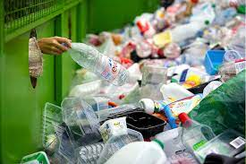

Gemors verwydering is die verwydering van afvalmateriale vanuit
huishoudings en industrieele instansies soos fabrieke na 'n aangewysde
areas waar die materiale behandel en verwerk word.
Vir baie jare het ons die verwydering van gemors so maklik en vinnig
as moontlik probeer maak, maar met die onlangse 4de Industrieele
Revolusie word dit net al hoe meer eenvoudig en doeltreffend. Die
onlangse gebruik van rekenaars en artificial intelligence (AI) het die
bestuur van gemors verwydering verbeter terwyl dit die omgewing
beskerm en volhoubaarheid verbeter.

Volgens navorsing van die International Solid Waste Association
(ISWA), glo 97% van sy lede dat die 4de Industrieele Revolusie die
industrie heeltamel sal verander voor 2030. Die Wereld Bank voorspel
ook dat die mark vir AI oplossings in die afval verwydering bedryf tot
USD 2.37 biljoen sal styg vanaf 'n groei van 16.9% vanaf 2016.
Met al hierdie tegnologie hoop ons dat ons die volhoubaarheid van
produksie sal verseker sonder om die omgewing aan te tas en die
klimaats krisis te vererger.